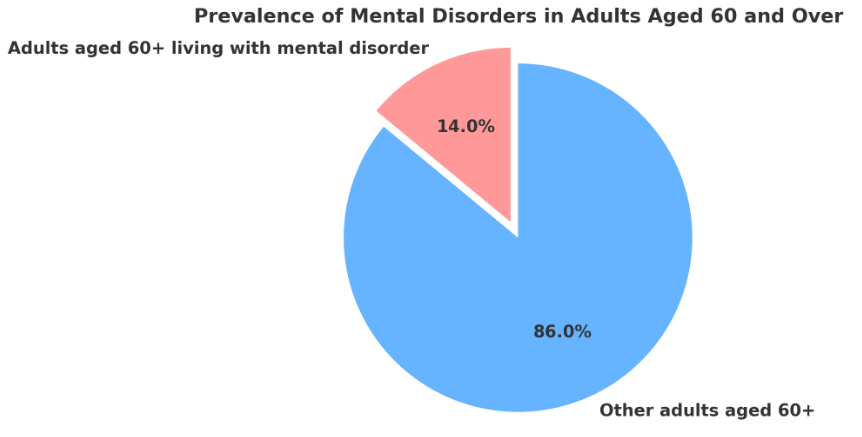
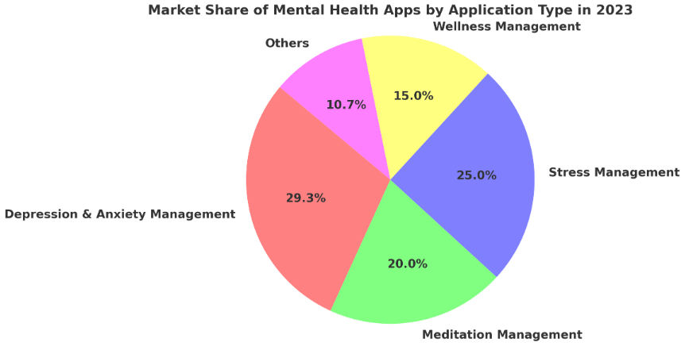

Evidence of Background Research Page
The prevalence of mental problems in the elderly emphasizes the need for mental health apps. According to the World Health Organization, around 14% of persons aged 60 and over live with a mental condition, accounting for 10.6% of total disability in this age range. Depression and anxiety are two common mental health disorders among elderly persons. Statistics show that many elderly people could benefit from mental health apps.[2]
The global mental health applications market is expanding rapidly, driven by rising awareness of mental health issues and the adoption of digital health technology. The COVID-19 epidemic has exacerbated this tendency, with mental health app downloads in the UK increasing 200% between 2019 and 2020. The market is predicted to increase from USD 7.5 billion in 2024 to USD 17.5 billion by 2030, with a CAGR of 15.2%. This expansion is aided by shifting attitudes toward customized care, greater smartphone and internet use, and increased funding for mental health app development.[3]
The increasing demand for mental health applications among the elderly emphasizes the importance of apps built expressly for this audience, with a focus on mental health needs and pharmaceutical support. Well-designed apps can greatly improve older individuals' quality of life by delivering tailored care, improving medication adherence, and increasing mental health. Such technology solutions are critical for promoting the mental health and well-being of the elderly, emphasizing the significance of incorporating user-friendly digital health technologies into their medical care.
References:
1- Mental health of older adults. (2023, October 20). https://www.who.int/news-room/fact-sheets/detail/mental-health-of-older-adultshttps://www.who.int/news-room/fact-sheets/detail/mental-health-of-older-adults
2- Mental Health Apps Market Size, Share & Trends Analysis Report By Platform Type (Android, iOS), By Application Type (Depression & Anxiety Management, Stress Management), By Region, And Segment Forecasts, 2024 - 2030. (2023, November 29). https://www.grandviewresearch.com/industry-analysis/mental-health-apps-market-reporthttps://www.grandviewresearch.com/industry-analysis/mental-health-apps-market-report